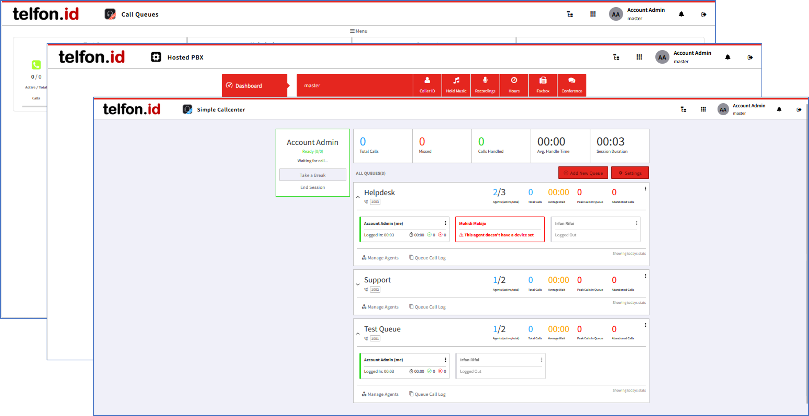

Its came from Open Source, not Big Iron guy!
KAZOO is an open-source, highly scalable software platform designed to provide carrier-grade VoIP switch functions and features. Developers, system administrators, and telecom engineers can build flexible, reliable telecom services using the extensive KAZOO APIs.
Our system is truly functionally rich, distributed, fault-tolerant, scalable, high-performance, API-controlled virtual telephone exchange platform
Kamailio
Kamailio acts as a SIP load balancer and super-speed registrar. We minimize the number of public network interfaces needed for clients and carriers by directing them to our load balancers. Adding capacity to our platform becomes as easy as informing Kamailio of the new FreeSWITCH voice node. Kamailio also includes great DDoS attack blocking tools that protect both client SIP devices and FreeSWITCH media application nodes.
FreeSWITCH
We use FreeSWITCH primarily as a media processing server. We rely heavily on FreeSWITCH's realtime event modules to keep statefulness across our cluster. FreeSWITCH is a carrier-grade switch in its own right. Adding CloudPBX's Kamailio load balancing and clustering features extend FreeSWITCH to provide a truly high quality cluster of carrier-grade media processing nodes.
CouchDB
It's a known secret that BigCouch/CouchDB is the magic fairy dust that makes CloudPBX so reliable. With the ability to replicate data, dynamically adjust the read and write quorums, and a simple-to-use HTTP interface, developing our platform using BigCouch/CouchDB as the long term datastore has been a huge win. As important, from an operational perspective, is that once you understand the knobs and levers to turn in order to tweak the performance characteristics, BigCouch/CouchDB is a breeze to operate and maintain.
RabbitMQ
We primarily start and conduct conversations between Kamailio and FreeSWITCH nodes and our application/logic layer using a standard protocol named AMQP. RabbitMQ is our preferred AMQP serve. While we've had discussions about "faster" systems like ZeroMQ (theoretically anyway), RabbitMQ allows us to keep everything in native Erlang data types, pass things around our software quickly, and cluster our CloudPBX application/logic nodes easily.
HA Proxy
HAPROXY load balancer (used to distribute access to DBMS servers).
Erlang Application Processing
Erlang platform and programming language on which the system logic is written: eCallMgr components and Whistle apps.
IMS Core Compatible Architecture

Applications Over API
